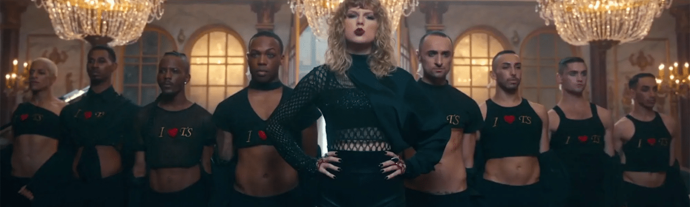

Red (2012):
"We Are Never Ever Getting Back Together": This song marked a departure from Swift's country roots toward a more pop-oriented sound. It's an anthemic breakup song with catchy hooks and a defiant attitude, showcasing Swift's ability to adapt her style.
"I Knew You Were Trouble": Known for its incorporation of dubstep elements, this song explores the theme of regret and falling for the wrong person. It was a commercial success and demonstrated Swift's willingness to experiment with different musical genres.
"22": An upbeat and celebratory anthem about the carefree spirit of being 22 years old. The song is characterized by its catchy chorus and infectious energy, adding a lighter and more carefree tone to the album.
"All Too Well": Widely regarded as one of Swift's masterpieces,
"All Too Well" is a poignant and emotional ballad. It delves
into the complexities of a past relationship, displaying Swift's
exceptional songwriting skills and ability to evoke deep
emotions.
"We Are Never Ever Getting Back Together": This song marked a departure from Swift's country roots toward a more pop-oriented sound. It's an anthemic breakup song with catchy hooks and a defiant attitude, showcasing Swift's ability to adapt her style.
"I Knew You Were Trouble": Known for its incorporation of dubstep elements, this song explores the theme of regret and falling for the wrong person. It was a commercial success and demonstrated Swift's willingness to experiment with different musical genres.
"22": An upbeat and celebratory anthem about the carefree spirit of being 22 years old. The song is characterized by its catchy chorus and infectious energy, adding a lighter and more carefree tone to the album.
1989 (2014):
"Wildest Dreams": This song is a dreamy and atmospheric track that combines '80s synth-pop influences with Swift's pop sensibilities. It's a love song with a cinematic quality, and its lush production contributed to the success of the "1989" album.
"Out of the Woods": This might be the song you referred to as "Is it over now." It's an introspective track about the challenges and uncertainties in a relationship. The song's production, co-produced by Jack Antonoff, contributes to its anthemic quality.
"Style": Perhaps mistakenly referred to as "Slut!" ("Style"), this track is known for its cool and retro vibe. It explores the themes of love and attraction with a touch of nostalgia and a catchy melody.
Reputation (2017):
"Look What You Made Me Do": The lead single from the "Reputation" album, this song is notable for its darker tone and edgier sound. It addresses Swift's public image and the controversies surrounding her, signaling a shift in her musical and personal narrative.
"Don't Blame Me": This track delves into themes of intense love and desire, featuring a sultrier sound compared to Swift's previous work. It showcases her willingness to experiment with different musical styles and themes.

PEAK ERA

Taylor Swift's discography from "Red" to "Reputation" represents
a significant evolution in her musical style and thematic
content. The transition from country to pop is evident, with
each album showcasing her versatility as an artist. The songs
mentioned highlight Swift's ability to tackle a range of
emotions and subjects, from the carefree energy of youth to the
complexities of love and the challenges of public perception.
The evolution in sound and lyrical depth across these albums is
a testament to Swift's growth as a singer-songwriter and her
impact on the music industry.
# THE ASCENSION